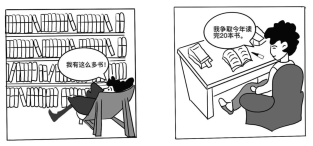

2017 年全国硕士研究生招生考试英语（一）
Section I Use of English
Directions:
Read the following text. Choose the best word(s) for each numbered blank and mark A, B, C or D on the ANSWER SHEET. (10 points)
Could a hug a day keep the doctor away? The answer may be a resounding “yes!” 1 helping you feel close and 2 to people you care about, it turns out that hugs can bring a 3 of health benefits to your body and mind. Believe it or not, a warm embrace might even help you 4 getting sick this winter.
In a recent study 5 over 400 healthy adults, researchers from Carnegie Mellon University in Pennsylvania examined the effects of perceived social support and the receipt of hugs 6 the participants’ susceptibility to developing the common cold after being 7 to the virus. People who perceived greater social support were less likely to come 8 with a cold, and the researchers 9 that the stress-reducing effects of hugging 10 about 32 percent of that beneficial effect. 11 among those who got a cold, the ones who felt greater social support and received more frequent hugs had less severe 12 .
“Hugging protects people who are under stress from the 13 risk for colds that’s usually 14 with stress,” notes Sheldon Cohen, a professor of psychology at Carnegie. Hugging “is a marker of intimacy and helps 15 the feeling that others are there to help 16 difficulty.”
Some experts 17 the stress-reducing, health-related benefits of hugging to the release of oxytocin, often called “the bonding hormone” 18 it promotes attachment in relationships, including that between mothers and their newborn babies. Oxytocin is made primarily in the central lower part of the brain, and some of it is released into the bloodstream. But some of it 19 in the brain, where it 20 mood, behavior and physiology.
Section II Reading Comprehension
Part A
Directions:
Read the following four texts. Answer the questions below each text by choosing A, B, C or D. Mark your answers on the ANSWER SHEET. (40 points)
Text 1
First two hours, now three hours — this is how far in advance authorities are recommending people show up to catch a domestic flight, at least at some major U.S. airports with increasingly massive security lines.
Americans are willing to tolerate time-consuming security procedures in return for increased safety. The crash of EgyptAir Flight 804, which terrorists may have downed over the Mediterranean Sea, provides another tragic reminder of why. But demanding too much of air travelers or providing too little security in return undermines public support for the process. And it should: Wasted time is a drag on Americans’ economic and private lives, not to mention infuriating.
Last year, the Transportation Security Administration (TSA) found in a secret check that undercover investigators were able to sneak weapons — both fake and real — past airport security nearly every time they tried. Enhanced security measures since then, combined with a rise in airline travel due to the improving economy and low oil prices, have resulted in long waits at major airports such as Chicago’s O’Hare International. It is not yet clear how much more effective airline security has become — but the lines are obvious.
Part of the issue is that the government did not anticipate the steep increase in airline
travel, so the TSA is now rushing to get new screeners on the line. Part of the issue is that airports have only so much room for screening lanes. Another factor may be that more people are trying to overpack their carry-on bags to avoid checked-baggage fees, though the airlines strongly dispute this.
There is one step the TSA could take that would not require remodeling airports or rushing to hire: Enroll more people in the PreCheck program. PreCheck is supposed to be a win-win for travelers and the TSA. Passengers who pass a background check are eligible to use expedited screening lanes. This allows the TSA to focus on travelers who are higher risk, saving time for everyone involved. The TSA wants to enroll 25 million people in PreCheck.
It has not gotten anywhere close to that, and one big reason is sticker shock: Passengers must pay $85 every five years to process their background checks. Since the beginning, this price tag has been PreCheck’s fatal flaw. Upcoming reforms might bring the price to a more reasonable level. But Congress should look into doing so directly, by helping to finance PreCheck enrollment or to cut costs in other ways.
The TSA cannot continue diverting resources into underused PreCheck lanes while most of the traveling public suffers in unnecessary lines. It is long past time to make the program work.
21. The crash of EgyptAir Flight 804 is mentioned to ____
22. Which of the following contributes to long waits at major airports?
23. The word “expedited” (Para. 5) is closest in meaning to ____
24. One problem with the PreCheck program is ____
25. Which of the following would be the best title for the text?
Text 2
“The ancient Hawaiians were astronomers,” wrote Queen Liliuokalani, Hawaii’s last reigning monarch, in 1897. Star watchers were among the most esteemed members of Hawaiian society. Sadly, all is not well with astronomy in Hawaii today. Protests have erupted over construction of the Thirty Meter Telescope (TMT), a giant observatory that promises to revolutionize humanity’s view of the cosmos.
At issue is the TMT’s planned location on Mauna Kea, a dormant volcano worshiped by some Hawaiians as the piko, that connects the Hawaiian Islands to the heavens. But Mauna Kea is also home to some of the world’s most powerful telescopes. Rested in the Pacific Ocean, Mauna Kea’s peak rises above the bulk of our planet’s dense atmosphere, where conditions allow telescopes to obtain images of unsurpassed clarity.
Opposition to telescopes on Mauna Kea is nothing new. A small but vocal group of Hawaiians and environmentalists have long viewed their presence as disrespect for sacred land and a painful reminder of the occupation of what was once a sovereign nation.
Some blame for the current controversy belongs to astronomers. In their eagerness to build bigger telescopes, they forgot that science is not the only way of understanding the world. They did not always prioritize the protection of Mauna Kea’s fragile ecosystems or its holiness to the islands’ inhabitants. Hawaiian culture is not a relic of the past; it is a living culture undergoing a renaissance today.
Yet science has a cultural history, too, with roots going back to the dawn of civilization. The same curiosity to find what lies beyond the horizon that first brought early Polynesians to Hawaii’s shores inspires astronomers today to explore the heavens. Calls to disassemble all telescopes on Mauna Kea or to ban future development there ignore the reality that astronomy and Hawaiian culture both seek to answer big questions about who we are, where we come from and where we are going. Perhaps that is why we explore the starry skies, as if answering a primal calling to know ourselves and our true ancestral homes.
The astronomy community is making compromises to change its use of Mauna Kea. The TMT site was chosen to minimize the telescope’s visibility around the island and to avoid archaeological and environmental impact. To limit the number of telescopes on Mauna Kea, old ones will be removed at the end of their lifetimes and their sites returned to a natural state. There is no reason why everyone cannot be welcomed on Mauna Kea to embrace their cultural heritage and to study the stars.
26. Queen Liliuokalani’s remark in Paragraph 1 indicates ____
27. Mauna Kea is deemed as an ideal astronomical site due to ____
28. The construction of the TMT is opposed by some locals partly because ____
29. It can be inferred from Paragraph 5 that progress in today’s astronomy ____
30. The author’s attitude toward choosing Mauna Kea as the TMT site is one of ____
Text 3
Robert F. Kennedy once said that a country’s GDP measures “everything except that which makes life worthwhile.” With Britain voting to leave the European Union, and GDP already predicted to slow as a result, it is now a timely moment to assess what he was referring to.
The question of GDP and its usefulness has annoyed policymakers for over half a century. Many argue that it is a flawed concept. It measures things that do not matter and misses things that do. By most recent measures, the UK’s GDP has been the envy of the Western world, with record low unemployment and high growth figures. If everything was going so well, then why did over 17 million people vote for Brexit, despite the warnings about what it could do to their country’s economic prospects?
A recent annual study of countries and their ability to convert growth into well-being sheds some light on that question. Across the 163 countries measured, the UK is one of the poorest performers in ensuring that economic growth is translated into meaningful improvements for its citizens. Rather than just focusing on GDP, over 40 different sets of criteria from health, education and civil society engagement have been measured to get a more rounded assessment of how countries are performing.
While all of these countries face their own challenges, there are a number of consistent themes. Yes, there has been a budding economic recovery since the 2008 global crash, but in key indicators in areas such as health and education, major economies have continued to decline. Yet this isn’t the case with all countries. Some relatively poor European countries have seen huge improvements across measures including civil society, income equality and environment.
This is a lesson that rich countries can learn: When GDP is no longer regarded as the sole measure of a country’s success, the world looks very different.
So, what Kennedy was referring to was that while GDP has been the most common method for measuring the economic activity of nations, as a measure, it is no longer enough. It does not include important factors such as environmental quality or education outcomes — all things that contribute to a person’s sense of well-being.
The sharp hit to growth predicted around the world and in the UK could lead to a decline in the everyday services we depend on for our well-being and for growth. But policymakers who refocus efforts on improving well-being rather than simply worrying about GDP figures could avoid the forecasted doom and may even see progress.
31. Robert F. Kennedy is cited because he ____
32. It can be inferred from Paragraph 2 that ____
33. Which of the following is true about the recent annual study?
34. In the last two paragraphs, the author suggests that ____
35. Which of the following is the best title for the text?
Text 4
In a rare unanimous ruling, the US Supreme Court has overturned the corruption conviction of a former Virginia governor, Robert McDonnell. But it did so while holding its nose at the ethics of his conduct, which included accepting gifts such as a Rolex watch and a Ferrari automobile from a company seeking access to government.
The high court’s decision said the judge in Mr. McDonnell’s trial failed to tell a jury that it must look only at his “official acts,” or the former governor’s decisions on “specific” and “unsettled” issues related to his duties.
Merely helping a gift-giver gain access to other officials, unless done with clear intent to pressure those officials, is not corruption, the justices found.
The court did suggest that accepting favors in return for opening doors is “distasteful” and “nasty.” But under anti-bribery laws, proof must be made of concrete benefits, such as approval of a contract or regulation. Simply arranging a meeting, making a phone call, or hosting an event is not an “official act.”
The court’s ruling is legally sound in defining a kind of favoritism that is not criminal. Elected leaders must be allowed to help supporters deal with bureaucratic problems without fear of prosecution for bribery. “The basic compact underlying representative government,” wrote Chief Justice John Roberts for the court, “assumes that public officials will hear from their constituents and act on their concerns.”
But the ruling reinforces the need for citizens and their elected representatives, not the courts, to ensure equality of access to government. Officials must not be allowed to play favorites in providing information or in arranging meetings simply because an individual or group provides a campaign donation or a personal gift. This type of integrity requires well-enforced laws in government transparency, such as records of official meetings, rules on lobbying, and information about each elected leader’s source of wealth.
Favoritism in official access can fan public perceptions of corruption. But it is not always corruption. Rather officials must avoid double standards, or different types of access for average people and the wealthy. If connections can be bought, a basic premise of democratic society — that all are equal in treatment by government — is undermined. Good government rests on an understanding of the inherent worth of each individual.
The court’s ruling is a step forward in the struggle against both corruption and official favoritism.
36. The underlined sentence (Para. 1) most probably shows that the court ____
37. According to Paragraph 4, an official act is deemed corruptive only if it involves ____
38. The court’s ruling is based on the assumption that public officials are ____
39. Well-enforced laws in government transparency are needed to ____
40. The author’s attitude toward the court’s ruling is ____
Part B
Directions:
The following paragraphs are given in a wrong order. For Questions 41-45, you are required to reorganize these paragraphs into a coherent text by choosing from the list A-G and filling them into the numbered boxes. Paragraphs B and D have been correctly placed. Mark your answers on the ANSWER SHEET. (10 points)
A) The first published sketch, “A Dinner at Poplar Walk” brought tears to Dickens’s eyes when he discovered it in the pages of The Monthly Magazine. From then on his sketches, which appeared under the pen name “Boz” in The Evening Chronicle, earned him a modest reputation.
B) The runaway success of The Pickwick Papers, as it is generally known today, secured Dickens’s fame. There were Pickwick coats and Pickwick cigars, and the plump, spectacled hero, Samuel Pickwick, became a national figure.
C) Soon after Sketches by Boz appeared, a publishing firm approached Dickens to write a story in monthly installments, as a backdrop for a series of woodcuts by the then-famous artist Robert Seymour, who had originated the idea for the story. With characteristic confidence, Dickens successfully insisted that Seymour’s pictures illustrate his own story instead. After the first installment, Dickens wrote to the artist and asked him to correct a drawing Dickens felt was not faithful enough to his prose. Seymour made the change, went into his backyard, and expressed his displeasure by committing suicide. Dickens and his publishers simply pressed on with a new artist. The comic novel, The Posthumous Papers of the Pickwick Club, appeared serially in 1836 and 1837, and was first published in book form in 1837.
D) Charles Dickens is probably the best-known and, to many people, the greatest English novelist of the 19th century. A moralist, satirist, and social reformer, Dickens crafted complex plots and striking characters that capture the panorama of English society.
E) Soon after his father’s release from prison, Dickens got a better job as errand boy in law offices. He taught himself shorthand to get an even better job later as a court stenographer and as a reporter in Parliament. At the same time, Dickens, who had a reporter’s eye for transcribing the life around him especially anything comic or odd, submitted short sketches to obscure magazines.
F) Dickens was born in Portsmouth, on England’s southern coast. His father was a clerk in the British Navy Pay Office — a respectable position, but with little social status. His paternal grandparents, a steward and a housekeeper, possessed even less status, having been servants, and Dickens later concealed their background. Dickens’s mother supposedly came from a more respectable family. Yet two years before Dickens’s birth, his mother’s father was caught stealing and fled to Europe, never to return. The family’s increasing poverty forced Dickens out of school at age 12 to work in Warren’s Blacking Warehouse, a shoe-polish factory, where the other working boys mocked him as “the young gentleman.” His father was then imprisoned for debt. The humiliations of his father’s imprisonment and his labor in the blacking factory formed Dickens’s greatest wound and became his deepest secret. He could not confide them even to his wife, although they provide the unacknowledged foundation of his fiction.
G) After Pickwick, Dickens plunged into a bleaker world. In Oliver Twist, he traces an orphan’s progress from the workhouse to the criminal slums of London. Nicholas Nickleby, his next novel, combines the darkness of Oliver Twist with the sunlight of Pickwick. The popularity of these novels consolidated Dickens as a nationally and internationally celebrated man of letters.

Part C
Directions:
Read the following text carefully and then translate the underlined segments into Chinese. Your translation should be written neatly on the ANSWER SHEET. (10 points)
The growth of the use of English as the world’s primary language for international communication has obviously been continuing for several decades. (46) But even as the number of English speakers expands further there are signs that the global predominance of the language may fade within the foreseeable future.
Complex international, economic, technological and cultural changes could start to diminish the leading position of English as the language of the world market, and UK interests which enjoy advantage from the breadth of English usage would consequently face new pressures. Those realistic possibilities are highlighted in the study presented by David Graddol. (47) His analysis should therefore end any self-contentedness among those who may believe that the global position of English is so stable that the young generations of the United Kingdom do not need additional language capabilities.
David Graddol concludes that monoglot English graduates face a bleak economic future as qualified multilingual youngsters from other countries are proving to have a competitive advantage over their British counterparts in global companies and organisations. Alongside that, (48) many countries are introducing English into the primary-school curriculum but British schoolchildren and students do not appear to be gaining greater encouragement to achieve fluency in other languages.
If left to themselves, such trends will diminish the relative strength of the English language in international education markets as the demand for educational resources in languages, such as Spanish, Arabic or Mandarin grows and international business process outsourcing in other language such as Japanese, French and German, spreads.
(49) The changes identified by David Graddol all present clear and major challenges to the UK’s providers of English language teaching to people of other countries and to broader education business sectors. The English language teaching sector directly earns nearly £1.3 billion for the UK in invisible exports and our other education related exports earn up to £10 billion a year more. As the international education market expands, the recent slowdown in the number of international students studying in the main English-speaking countries is likely to continue, especially if there are no effective strategic policies to prevent such slippage.
The anticipation of possible shifts in demand provided by this study is significant: (50) It gives a basis to all organisations which seek to promote the learning and use of English, a basis for planning to meet the possibilities of what could be a very different operating environment. That is a necessary and practical approach. In this as in much else, those who wish to influence the future must prepare for it.
Section III Writing
Part A
51. Directions:
You are to write an email to James Cook, a newly-arrived Australian professor, recommending some tourist attractions in your city. Please give reasons for your recommendation. You should write neatly on the ANSWER SHEET. Do not sign your own name at the end of the email. Use “Li Ming” instead. Do not write the address. (10 points)
Part B
52. Directions:
Write an essay of 160-200 words based on the following pictures. In your essay, you should
1) describe the pictures briefly,
2) interpret the meaning, and
3) give your comments.
You should write neatly on the ANSWER SHEET. (20 points)
